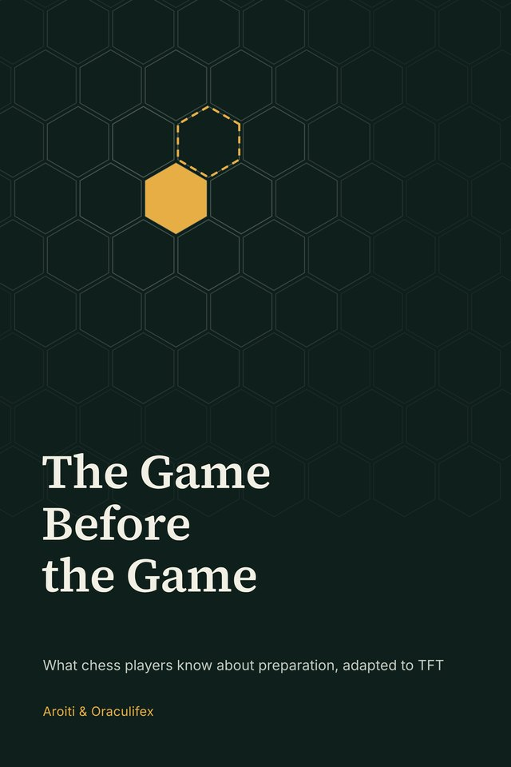

New
The Game Before the Game
What chess players know about preparation, adapted to Teamfight Tactics
In chess, a game is often played before the first move. This short essay borrows a century of chess preparation and adapts it to TFT: your repertoire, study, game day, the game itself and the review afterwards.
Free, no sign-up. 31 pages.
